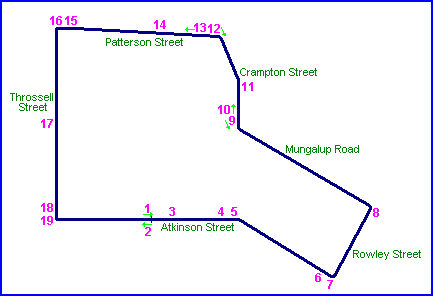
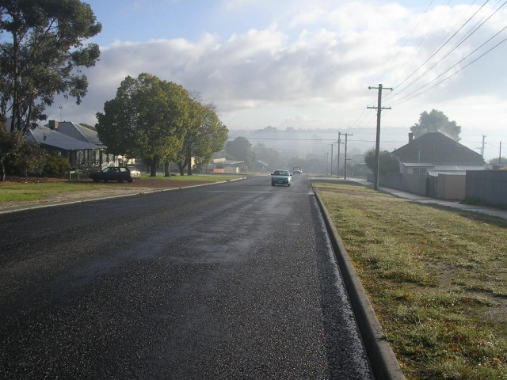
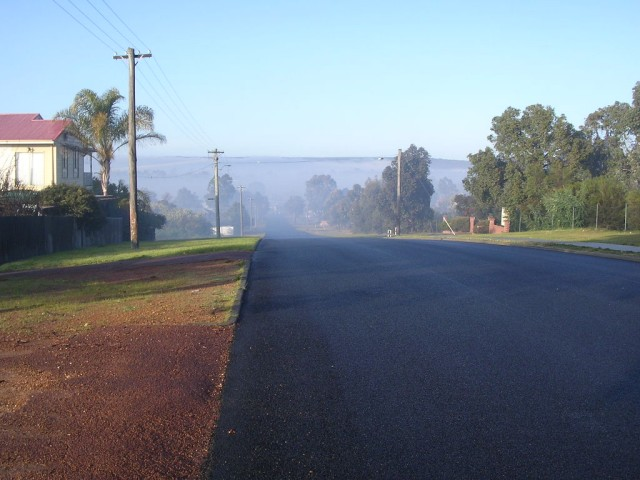
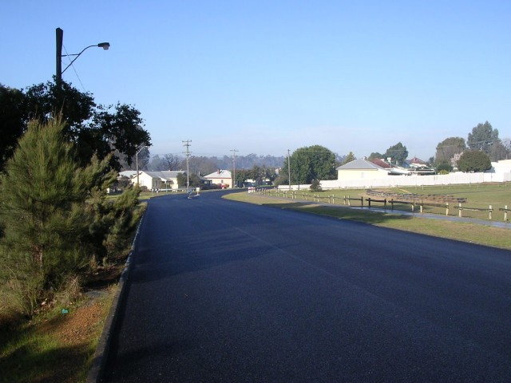
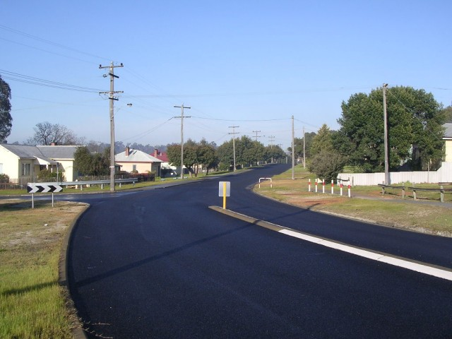
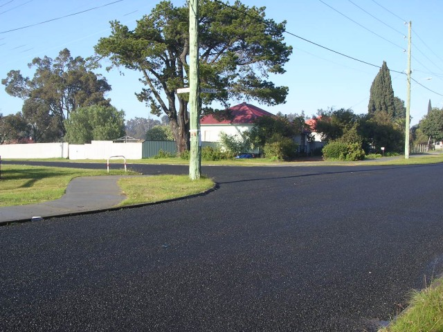

1 - Atkinson Street on the uphill start area.
Collie - Atkinson Street
|| Contents || Atkinson | Rowley / Mungalup / Crampton | Patterson / Throssell || Home ||

Numbers on the map represent the location where the photographs were taken. Scroll
down to view the photographs.
Return to racingcircuits.net's Photo Archive Main Index
1 - Atkinson Street on the uphill start area.

2 - From same area, looking back down Atkinson Street.

3 - Crest on Atkinson Street.

4 - Approaching right sweep on Atkinson Street.

5 - Right sweep on Atkinson Street.

6 - Left turn into Rowley Street.
Photographs and Text ©Neil Fackerell. Reproduced here with kind permission.